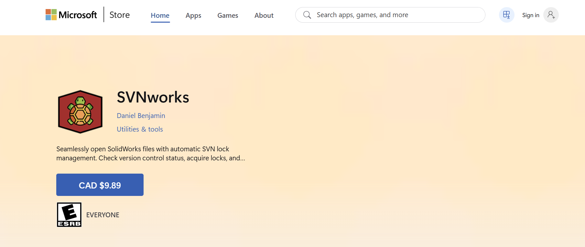
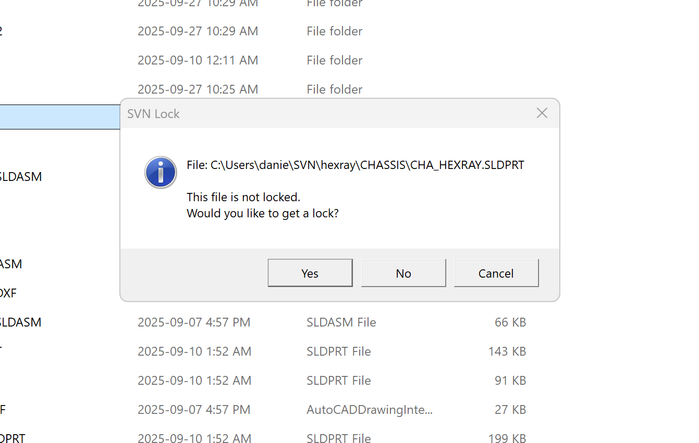
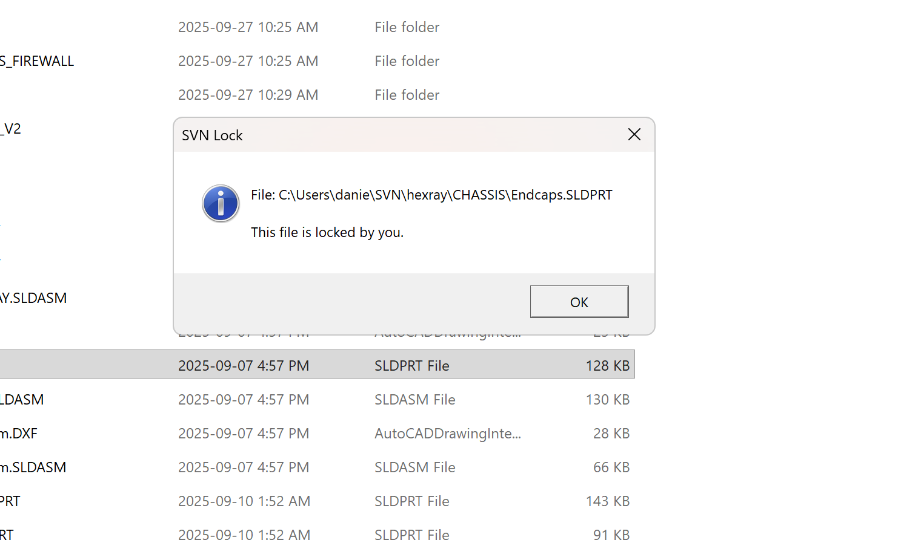
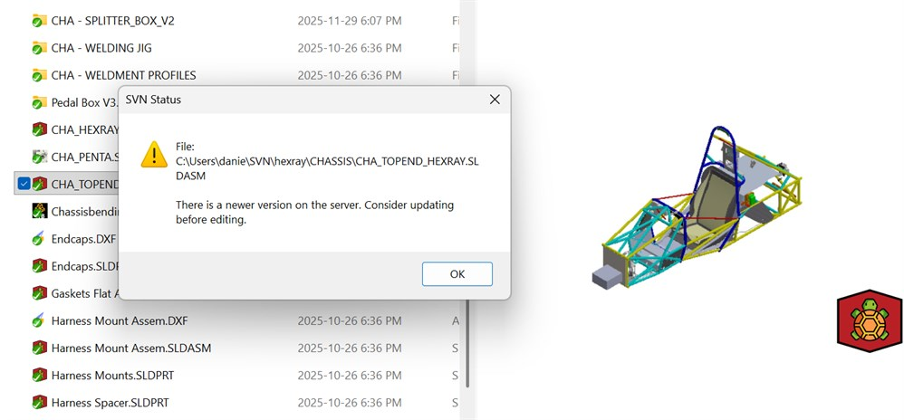

SVNWORKS: CAD Version Control + Team Infra
A Windows application that brings SVN file locking and repository status into the SOLIDWORKS file-opening workflow, backed by the version-control infrastructure used by UBC Formula Electric.

Project Summary
- A Windows application built around the SOLIDWORKS file-opening workflow.
- Revision and lock-ownership checks before editing begins.
- Deployed Apache SVN on Oracle Cloud.
- Integrated repository state and locking with the SOLIDWORKS API and packaged the client as an MSIX application.
- Deployed in the chassis subteam's daily CAD workflow.
- Reduced overwrite conflicts and exposed file ownership and stale local revisions at the point of use.
Problem
CAD files do not behave like source code. A text file can usually be merged when two people edit it at once; a binary SOLIDWORKS part or assembly cannot. If two designers work from the same revision, one person's update can overwrite the other's without a useful way to reconcile the changes afterward.
Apache Subversion already provides version history and file locking, but those safeguards only work when designers can see and use them at the point where they open a file. SVNworks closes that gap. It is a custom Windows application built around the way a CAD team actually works, providing immediate feedback about repository state and file ownership before editing begins.
SVN on Oracle Cloud
I also deployed and maintain the SVN server on Oracle Cloud to host UBC Formula Electric's design files. SOLIDWORKS assemblies from across the team are organized around the car's subsystem structure, with version history and explicit file ownership replacing the ambiguity of a shared drive.
Running it on Oracle Cloud rather than a spare laptop under someone's desk means the server's uptime doesn't depend on any one person's machine being on — a real risk for infrastructure a hundred-person team depends on daily.
SVNworks Application
I developed SVNworks in C# and .NET, integrated it with Apache Subversion and the SOLIDWORKS API, and packaged it as an MSIX application for distribution through the Microsoft Store. The tool checks the selected CAD file against the repository, reports whether the local copy is current, and exposes its lock state directly in the file-opening workflow.
If a file is unlocked, the user can acquire its SVN lock before opening it. If another user already owns the lock—or a newer revision exists on the server—the application makes that state visible immediately. This turns version control from a separate procedure that is easy to forget into part of the normal act of opening a design.
- File-lock awareness: shows whether a part or assembly is available to edit and lets the user acquire a lock.
- Repository status: warns when the server contains a newer revision before work begins.
- CAD-focused workflow: connects SVN state to SOLIDWORKS instead of requiring designers to interpret it in a separate client.
- MSIX distribution: provides a straightforward Windows installation and update path through the Microsoft Store.



Results
SVNworks is now used by UBC Formula Electric's chassis subteam as part of its daily CAD workflow. Making lock ownership and repository status visible before a file opens has reduced conflicting edits, improved accountability for design changes, and made version control easier for new members to follow. Publishing the application through the Microsoft Store also gives other SOLIDWORKS teams a simple way to install the same workflow.
- Reduced overwrite conflicts in a collaborative CAD environment.
- Improved awareness of who is editing each design and whether a local file is current.
- Deployed for daily use by the UBC Formula Electric chassis subteam.